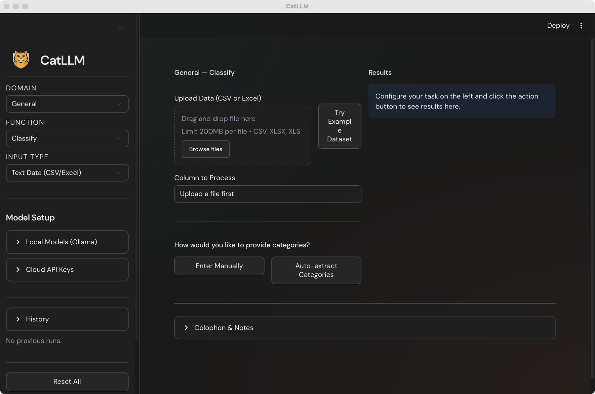

A reproducible LLM pipeline
for classifying open-ended text
A Python and R toolkit for systematic text classification using large language models. Validated against expert human coders across 30+ LLMs and 4 survey tasks — 88–99% accuracy depending on the task (Soria 2026). Provider-agnostic — runs on GPT, Gemini, Qwen, Claude, or fully local open-weight models via Ollama.
pip install cat-llm
Defaults grounded in systematic evaluation — so methodological choices are documented, defensible, and reproducible.
Aggregate predictions across models with unanimous voting. Inexpensive open-weight ensembles can match or exceed individual frontier models at a fraction of the cost.
Compatible with GPT, Gemini, Qwen, Claude, and open-weight models served via Ollama. REST-based with no SDK dependencies; switch providers without changing analysis code.
Runs entirely on local hardware via open-weight models. Sensitive data — survey responses, clinical text, PII — never leaves the machine, supporting IRB and HIPAA constraints.
Text, images, and PDFs share one consistent API. Automatic input detection handles mixed datasets without per-modality configuration.
From raw text to coded data — no predefined categories required.
Automatically discover categories from your data. Sample responses, let the model surface recurring themes, then merge semantically similar labels into a clean taxonomy.
Extract structured classifications at scale. Batch processing handles entire dataframe columns with configurable model selection and provider routing.
Assign categories with multi-label support and ensemble voting. Verbose definitions with inclusion/exclusion criteria dramatically reduce over-classification.
Six domain packages built on the shared cat-stack engine. Each adds optimized prompts, specialized parameters, and built-in data sources for its domain — while exposing the same classify() / extract() API.
Classify open-ended survey responses at scale. Handles ambiguity with verbose category definitions and ensemble voting.
pip install cat-survey
17 built-in data sources: municipal ordinances, federal laws, executive orders, presidential speeches, and more. Updated weekly.
pip install cat-pol
Classify social media posts, comments, and short-form text with domain-tuned prompts for informal language.
pip install cat-vader
Classify and summarize academic abstracts, full texts, and research documents across disciplines.
pip install cat-ademic
Specialized tools for cognitive assessment scoring, including CERAD drawing evaluation for dementia research.
pip install cat-cog
Classify scraped web pages, articles, and HTML content with domain-tuned prompts for long-form online text.
pip install cat-web
A native, self-contained app that wraps the full cat-llm pipeline. No Python install, no terminal — drag, drop, classify. Same engine as the Python package, same outputs, same reproducibility code generation.

Apple Silicon is shipping now. Intel and Windows builds are on the roadmap — same feature set, same UI.
Researchers already have access to powerful LLMs through ChatGPT, Claude, and Gemini. The question isn't whether LLMs can classify text — it's whether the workflow meets the standards of empirical research: reproducible, transparent, validated, and scalable.
| Manual coding | ChatGPT / Claude / Gemini chat | CatLLM | |
|---|---|---|---|
| Reproducible | Depends on coder consistency; inter-rater drift is common | No — outputs vary run-to-run; prompts live in chat history | Yes — versioned prompts, pinned models, deterministic config |
| Scales to thousands of responses | No — hours of work per few hundred responses | Limited — copy/paste workflow, no batch processing | Yes — pandas / dataframe input, batch APIs, parallel execution |
| Standardized output | Varies by coder | Free-form prose that needs to be re-parsed | Structured DataFrame; CSV-ready for Stata, R, Python |
| Transparent prompts | — | Buried in conversation; not version-controlled | Inspectable, modifiable, committable to your repo |
| Validated defaults | Codebook-dependent | None — relies on the user's prompt design | Defaults tuned against expert human coders in published benchmarks |
| Multi-label & ensemble support | Manual aggregation | Inconsistent across runs and models | Native multi-label; unanimous-vote ensembles across providers |
| Best for | Small, exploratory studies; rich qualitative interpretation | One-off exploration; drafting a candidate taxonomy | Production research datasets that need to be defensible at peer review |
A complete classification pipeline in under 10 lines of Python. The same workflow runs in R via the native cat.llm package on R-universe.
Defaults are grounded in a systematic evaluation of 21 LLMs across 6 providers and 4 open-ended survey coding tasks, benchmarked against expert human coders.